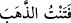
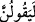
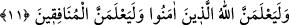

ve âhireti ile ilgili gelen zararlardır.
“İnsanların işkencesini, Allah’ın” âhiretteki acıklı ve şiddetli “azâbı gibi tutar.”
“Fitne”, imtihan etmek, denemek mânâsına gelir. Altının iyisini kötüsünden ayırmak
için ateşe atınca: “
(altını denedim)” dersin. Bu kelime mutlak olarak
“meşakkat” mânâsında kullanılmıştır. Çünkü meşakkat, kalb tasfiyesinin sebebidir.
“Allah’ın âhiretteki şiddetli azâbı gibi” görmesinin sebebi, beşeriyet korkusunun bu
kimseyi istîlâ etmiş olmasından dolayıdır. Çünkü Allah korkusunun (haşyetullah)
himâyesinde olmayan kimseyi mahlûkat korkusu sarar. Ona göre iki azâb eşittir. Şu anda
dünya azâbından korkar; kesilmeyen ve devamlı olan âhiret azâbını ihmâl eder; sonunda
Allah korusun dinden çıkar. Şayet o, Allah’ın azâbının şiddetini ve bu azâbın yanında
insanların işkencesinin bir kıymeti olmadığını bilseydi, vücudu parça parça edilse bile
dininden dönmezdi. Hadis-i şerifte buyrulmuştur ki: “Kim Allah’tan korkarsa, Allah
her şeyi ondan korkutur. Kim de Allah’dan korkmazsa, Allah onu her şeyden
korkutur.”[165]
Bâzıları demiştir ki: İnsanların fitnesi, îmandan çevirme sebebi; Allah’ın azâbı ise
küfürden çevirme sebebi kılınmıştır. Yani, halkın azap etmesinden korkarak îmanı terk
eder. Halbuki Allah Teâlâ’nın azap etmesinden korkarak küfrü terk etmek gerekir.
“Halbuki Rabbinden bir nusret gelecek olsa,” yâni mü’minlere bir feth ve ganimet
müyesser olsa...
Bu âyet-i kerime medenîdir; Medîne’de inmiştir.
“Mutlaka, “Doğrusu biz de sizinle beraberdik” derler.”
Âyetin başındaki “ ” edâtının mânâsı göz önünde bulundurulduğu için fiil “
”
(derler) şeklinde çoğul gelmiş; yâni fiilin lâm harfi ötüreli okunmuştur. Yukarıda ise
lafız göz önünde tutulduğu için müfred olarak gelmişti.
Yâni onlar, biz sizinle beraberiz; dinde size uyanlardanız. Doayısıyla bizi de ganimete
ortak edin, derler.
Bunlar, bir takım zayıf îmanlı müslümanlardı. Kâfirlerden bir ezâya maruz kalınca
onlara uyarlar ve bunu da müslümanlardan gizlerlerdi. Allah Teâlâ onların bu
davranışını şu âyetle reddetti:
“İyi de, Allah, herkesin kalbindekileri” gizli tuttukları ihlâs ve nifâkı “en iyi bilen
değil midir?” Tâ ki yapacaklarını yapsınlar; dinden dönme, yaptıklarını gizleme,
ganimetten hak iddiâ etme gibi. Acaba âlimlerin sinelerinde ihlâsın saflığından ve
nifakın karanlığından her ne varsa herkesten daha iyi bilen Allah Teâlâ değil midir?